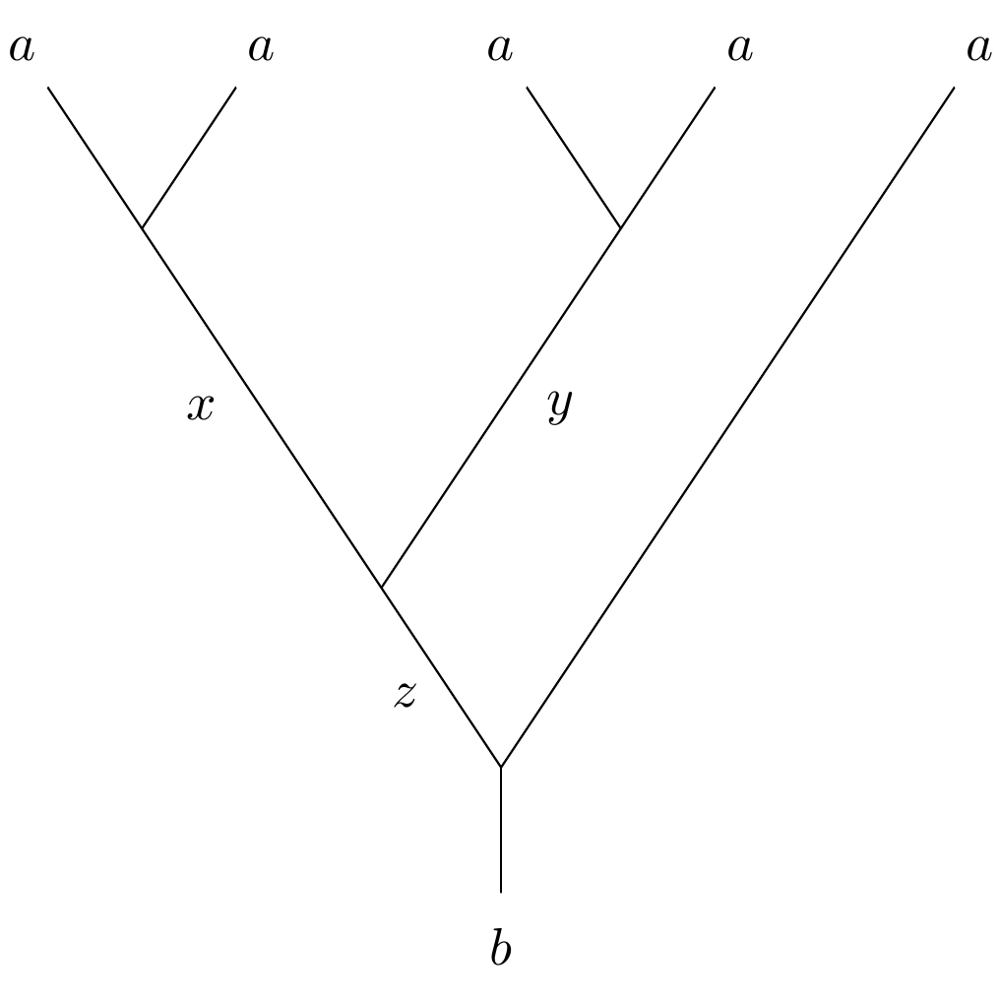

Fusion Rings#
- class sage.algebras.fusion_rings.fusion_ring.FusionRing(ct, base_ring=Integer Ring, prefix=None, style='lattice', k=None, conjugate=False, cyclotomic_order=None, fusion_labels=None, inject_variables=False)#
Bases:
WeylCharacterRingReturn the Fusion Ring (Verlinde Algebra) of level
k.INPUT:
ct– the Cartan type of a simple (finite-dimensional) Lie algebrak– a nonnegative integerconjugate– (defaultFalse) setTrueto obtain the complex conjugate ringcyclotomic_order– (default computed depending onctandk)fusion_labels– (default None) either a tuple of strings to use as labels of the basis of simple objects, or a string from which the labels will be constructedinject_variables– (defaultFalse): use withfusion_labels. Ifinject_variablesisTrue, the fusion labels will be variables that can be accessed from the command line
The cyclotomic order is an integer \(N\) such that all computations will return elements of the cyclotomic field of \(N\)-th roots of unity. Normally you will never need to change this but consider changing it if
root_of_unity()raises aValueError.This algebra has a basis (sometimes called primary fields but here called simple objects) indexed by the weights of level \(\leq k\). These arise as the fusion algebras of Wess-Zumino-Witten (WZW) conformal field theories, or as Grothendieck groups of tilting modules for quantum groups at roots of unity. The
FusionRingclass is implemented as a variant of theWeylCharacterRing.REFERENCES:
[BaKi2001] Chapter 3
[DFMS1996] Chapter 16
[EGNO2015] Chapter 8
EXAMPLES:
sage: A22 = FusionRing("A2", 2) sage: [f1, f2] = A22.fundamental_weights() sage: M = [A22(x) for x in [0*f1, 2*f1, 2*f2, f1+f2, f2, f1]] sage: [M[3] * x for x in M] [A22(1,1), A22(0,1), A22(1,0), A22(0,0) + A22(1,1), A22(0,1) + A22(2,0), A22(1,0) + A22(0,2)]
You may assign your own labels to the basis elements. In the next example, we create the \(SO(5)\) fusion ring of level \(2\), check the weights of the basis elements, then assign new labels to them while injecting them into the global namespace:
sage: B22 = FusionRing("B2", 2) sage: b = [B22(x) for x in B22.get_order()]; b [B22(0,0), B22(1,0), B22(0,1), B22(2,0), B22(1,1), B22(0,2)] sage: [x.weight() for x in b] [(0, 0), (1, 0), (1/2, 1/2), (2, 0), (3/2, 1/2), (1, 1)] sage: B22.fusion_labels(['I0', 'Y1', 'X', 'Z', 'Xp', 'Y2'], inject_variables=True) sage: b = [B22(x) for x in B22.get_order()]; b [I0, Y1, X, Z, Xp, Y2] sage: [(x, x.weight()) for x in b] [(I0, (0, 0)), (Y1, (1, 0)), (X, (1/2, 1/2)), (Z, (2, 0)), (Xp, (3/2, 1/2)), (Y2, (1, 1))] sage: X * Y1 X + Xp sage: Z * Z I0
A fixed order of the basis keys is available with
get_order(). This is the order used by methods such ass_matrix(). You may useCombinatorialFreeModule.set_order()to reorder the basis:sage: B22.set_order([x.weight() for x in [I0, Y1, Y2, X, Xp, Z]]) sage: [B22(x) for x in B22.get_order()] [I0, Y1, Y2, X, Xp, Z]
To reset the labels, you may run
fusion_labels()with no parameter:sage: B22.fusion_labels() sage: [B22(x) for x in B22.get_order()] [B22(0,0), B22(1,0), B22(0,2), B22(0,1), B22(1,1), B22(2,0)]
To reset the order to the default, simply set it to the list of basis element keys:
sage: B22.set_order(B22.basis().keys().list()) sage: [B22(x) for x in B22.get_order()] [B22(0,0), B22(1,0), B22(0,1), B22(2,0), B22(1,1), B22(0,2)]
The fusion ring has a number of methods that reflect its role as the Grothendieck ring of a modular tensor category (MTC). These include twist methods
Element.twist()andElement.ribbon()for its elements related to the ribbon structure, and the S-matrixs_ij().There are two natural normalizations of the S-matrix. Both are explained in Chapter 3 of [BaKi2001]. The one that is computed by the method
s_matrix(), or whose individual entries are computed bys_ij()is denoted \(\tilde{s}\) in [BaKi2001]. It is not unitary.The unitary S-matrix is \(s=D^{-1/2}\tilde{s}\) where
\[D = \sum_V d_i(V)^2.\]The sum is over all simple objects \(V\) with \(d_i(V)\) the quantum dimension. We will call quantity \(D\) the global quantum dimension and \(\sqrt{D}\) the total quantum order. They are computed by
global_q_dimension()andtotal_q_order(). The unitary S-matrix \(s\) may be obtained usings_matrix()with the optionunitary=True.Let us check the Verlinde formula, which is [DFMS1996] (16.3). This famous identity states that
\[N^k_{ij} = \sum_l \frac{s(i, \ell)\, s(j, \ell)\, \overline{s(k, \ell)}}{s(I, \ell)},\]where \(N^k_{ij}\) are the fusion coefficients, i.e. the structure constants of the fusion ring, and
Iis the unit object. The S-matrix has the property that if \(i*\) denotes the dual object of \(i\), implemented in Sage asi.dual(), then\[s(i*, j) = s(i, j*) = \overline{s(i, j)}.\]This is equation (16.5) in [DFMS1996]. Thus with \(N_{ijk}=N^{k*}_{ij}\) the Verlinde formula is equivalent to
\[N_{ijk} = \sum_l \frac{s(i, \ell)\, s(j, \ell)\, s(k, \ell)}{s(I, \ell)},\]In this formula \(s\) is the normalized unitary S-matrix denoted \(s\) in [BaKi2001]. We may define a function that corresponds to the right-hand side, except using \(\tilde{s}\) instead of \(s\):
sage: def V(i, j, k): ....: R = i.parent() ....: return sum(R.s_ij(i, l) * R.s_ij(j, l) * R.s_ij(k, l) / R.s_ij(R.one(), l) ....: for l in R.basis())
This does not produce
self.N_ijk(i, j, k)exactly, because of the missing normalization factor. The following code to check the Verlinde formula takes this into account:sage: def test_verlinde(R): ....: b0 = R.one() ....: c = R.global_q_dimension() ....: return all(V(i, j, k) == c * R.N_ijk(i, j, k) for i in R.basis() ....: for j in R.basis() for k in R.basis())
Every fusion ring should pass this test:
sage: test_verlinde(FusionRing("A2", 1)) True sage: test_verlinde(FusionRing("B4", 2)) # long time (.56s) True
As an exercise, the reader may verify the examples in Section 5.3 of [RoStWa2009]. Here we check the example of the Ising modular tensor category, which is related to the BPZ minimal model \(M(4, 3)\) or to an \(E_8\) coset model. See [DFMS1996] Sections 7.4.2 and 18.4.1. [RoStWa2009] Example 5.3.4 tells us how to construct it as the conjugate of the \(E_8\) level 2
FusionRing:sage: I = FusionRing("E8", 2, conjugate=True) sage: I.fusion_labels(["i0", "p", "s"], inject_variables=True) sage: b = I.basis().list(); b [i0, p, s] sage: Matrix([[x*y for x in b] for y in b]) # long time (.93s) [ i0 p s] [ p i0 s] [ s s i0 + p] sage: [x.twist() for x in b] [0, 1, 1/8] sage: [x.ribbon() for x in b] [1, -1, zeta128^8] sage: [I.r_matrix(i, j, k) for (i, j, k) in [(s, s, i0), (p, p, i0), (p, s, s), (s, p, s), (s, s, p)]] [-zeta128^56, -1, -zeta128^32, -zeta128^32, zeta128^24] sage: I.r_matrix(s, s, i0) == I.root_of_unity(-1/8) True sage: I.global_q_dimension() 4 sage: I.total_q_order() 2 sage: [x.q_dimension()^2 for x in b] [1, 1, 2] sage: I.s_matrix() [ 1 1 -zeta128^48 + zeta128^16] [ 1 1 zeta128^48 - zeta128^16] [-zeta128^48 + zeta128^16 zeta128^48 - zeta128^16 0] sage: I.s_matrix().apply_map(lambda x:x^2) [1 1 2] [1 1 2] [2 2 0]
The term modular tensor category refers to the fact that associated with the category there is a projective representation of the modular group \(SL(2, \ZZ)\). We recall that this group is generated by
\[\begin{split}S = \begin{pmatrix} & -1\\1\end{pmatrix}, \qquad T = \begin{pmatrix} 1 & 1\\ &1 \end{pmatrix}\end{split}\]subject to the relations \((ST)^3 = S^2\), \(S^2T = TS^2\), and \(S^4 = I\). Let \(s\) be the normalized S-matrix, and \(t\) the diagonal matrix whose entries are the twists of the simple objects. Let \(s\) the unitary S-matrix and \(t\) the matrix of twists, and \(C\) the conjugation matrix
conj_matrix(). Let\[D_+ = \sum_i d_i^2 \theta_i, \qquad D_- = d_i^2 \theta_i^{-1},\]where \(d_i\) and \(\theta_i\) are the quantum dimensions and twists of the simple objects. Let \(c\) be the Virasoro central charge, a rational number that is computed in
virasoro_central_charge(). It is known that\[\sqrt{\frac{D_+}{D_-}} = e^{i\pi c/4}.\]It is proved in [BaKi2001] Equation (3.1.17) that
\[(st)^3 = e^{i\pi c/4} s^2, \qquad s^2 = C, \qquad C^2 = 1, \qquad Ct = tC.\]Therefore \(S \mapsto s, T \mapsto t\) is a projective representation of \(SL(2, \ZZ)\). Let us confirm these identities for the Fibonacci MTC
FusionRing("G2", 1):sage: R = FusionRing("G2", 1) sage: S = R.s_matrix(unitary=True) sage: T = R.twists_matrix() sage: C = R.conj_matrix() sage: c = R.virasoro_central_charge(); c 14/5 sage: (S*T)^3 == R.root_of_unity(c/4) * S^2 True sage: S^2 == C True sage: C*T == T*C True
- D_minus(base_coercion=True)#
Return \(\sum d_i^2\theta_i^{-1}\) where \(i\) runs through the simple objects, \(d_i\) is the quantum dimension and \(\theta_i\) is the twist.
This is denoted \(p_-\) in [BaKi2001] Chapter 3.
EXAMPLES:
sage: E83 = FusionRing("E8", 3, conjugate=True) sage: [Dp, Dm] = [E83.D_plus(), E83.D_minus()] sage: Dp*Dm == E83.global_q_dimension() True sage: c = E83.virasoro_central_charge(); c -248/11 sage: Dp*Dm == E83.global_q_dimension() True
- D_plus(base_coercion=True)#
Return \(\sum d_i^2\theta_i\) where \(i\) runs through the simple objects, \(d_i\) is the quantum dimension and \(\theta_i\) is the twist.
This is denoted \(p_+\) in [BaKi2001] Chapter 3.
EXAMPLES:
sage: B31 = FusionRing("B3", 1) sage: Dp = B31.D_plus(); Dp 2*zeta48^13 - 2*zeta48^5 sage: Dm = B31.D_minus(); Dm -2*zeta48^3 sage: Dp*Dm == B31.global_q_dimension() True sage: c = B31.virasoro_central_charge(); c 7/2 sage: Dp/Dm == B31.root_of_unity(c/2) True
- class Element#
Bases:
ElementA class for FusionRing elements.
- is_simple_object()#
Determine whether
selfis a simple object of the fusion ring.EXAMPLES:
sage: A22 = FusionRing("A2", 2) sage: x = A22(1, 0); x A22(1,0) sage: x.is_simple_object() True sage: x^2 A22(0,1) + A22(2,0) sage: (x^2).is_simple_object() False
- q_dimension(base_coercion=True)#
Return the quantum dimension as an element of the cyclotomic field of the \(2\ell\)-th roots of unity, where \(l = m (k+h^\vee)\) with \(m=1, 2, 3\) depending on whether type is simply, doubly or triply laced, \(k\) is the level and \(h^\vee\) is the dual Coxeter number.
EXAMPLES:
sage: B22 = FusionRing("B2", 2) sage: [(b.q_dimension())^2 for b in B22.basis()] [1, 4, 5, 1, 5, 4]
- ribbon(base_coercion=True)#
Return the twist or ribbon element of
self.If \(h\) is the rational number modulo 2 produced by
self.twist(), this method produces \(e^{i\pi h}\).See also
An additive version of this is available as
twist().EXAMPLES:
sage: F = FusionRing("A1", 3) sage: [x.twist() for x in F.basis()] [0, 3/10, 4/5, 3/2] sage: [x.ribbon(base_coercion=False) for x in F.basis()] [1, zeta40^6, zeta40^12 - zeta40^8 + zeta40^4 - 1, -zeta40^10] sage: [F.root_of_unity(x, base_coercion=False) for x in [0, 3/10, 4/5, 3/2]] [1, zeta40^6, zeta40^12 - zeta40^8 + zeta40^4 - 1, -zeta40^10]
- twist(reduced=True)#
Return a rational number \(h\) such that \(\theta = e^{i \pi h}\) is the twist of
self. The quantity \(e^{i \pi h}\) is also available usingribbon().This method is only available for simple objects. If \(\lambda\) is the weight of the object, then \(h = \langle \lambda, \lambda+2\rho \rangle\), where \(\rho\) is half the sum of the positive roots. As in [Row2006], this requires normalizing the invariant bilinear form so that \(\langle \alpha, \alpha \rangle = 2\) for short roots.
INPUT:
reduced– (default:True) boolean; ifTruethen return the twist reduced modulo 2
EXAMPLES:
sage: G21 = FusionRing("G2", 1) sage: [x.twist() for x in G21.basis()] [0, 4/5] sage: [G21.root_of_unity(x.twist()) for x in G21.basis()] [1, zeta60^14 - zeta60^4] sage: zeta60 = G21.field().gen() sage: zeta60^((4/5)*(60/2)) zeta60^14 - zeta60^4 sage: F42 = FusionRing("F4", 2) sage: [x.twist() for x in F42.basis()] [0, 18/11, 2/11, 12/11, 4/11] sage: E62 = FusionRing("E6", 2) sage: [x.twist() for x in E62.basis()] [0, 26/21, 12/7, 8/21, 8/21, 26/21, 2/3, 4/7, 2/3]
- weight()#
Return the parametrizing dominant weight in the level \(k\) alcove.
This method is only available for basis elements.
EXAMPLES:
sage: A21 = FusionRing("A2", 1) sage: [x.weight() for x in A21.basis().list()] [(0, 0, 0), (2/3, -1/3, -1/3), (1/3, 1/3, -2/3)]
- N_ijk(elt_i, elt_j, elt_k)#
Return the symmetric fusion coefficient \(N_{ijk}\).
INPUT:
elt_i,elt_j,elt_k– elements of the fusion basis
This is the same as \(N_{ij}^{k\ast}\), where \(N_{ij}^k\) are the structure coefficients of the ring (see
Nk_ij()), and \(k\ast`\) denotes the dual element. The coefficient \(N_{ijk}\) is unchanged under permutations of the three basis vectors.EXAMPLES:
sage: G23 = FusionRing("G2", 3) sage: G23.fusion_labels("g") sage: b = G23.basis().list(); b [g0, g1, g2, g3, g4, g5] sage: [(x, y, z) for x in b for y in b for z in b if G23.N_ijk(x, y, z) > 1] [(g3, g3, g3), (g3, g3, g4), (g3, g4, g3), (g4, g3, g3)] sage: all(G23.N_ijk(x, y, z)==G23.N_ijk(y, z, x) for x in b for y in b for z in b) True sage: all(G23.N_ijk(x, y, z)==G23.N_ijk(y, x, z) for x in b for y in b for z in b) True
- Nk_ij(elt_i, elt_j, elt_k)#
Return the fusion coefficient \(N^k_{ij}\).
These are the structure coefficients of the fusion ring, so
\[i * j = \sum_{k} N_{ij}^k k.\]EXAMPLES:
sage: A22 = FusionRing("A2", 2) sage: b = A22.basis().list() sage: all(x*y == sum(A22.Nk_ij(x, y, k)*k for k in b) for x in b for y in b) True
- conj_matrix()#
Return the conjugation matrix, which is the permutation matrix for the conjugation (dual) operation on basis elements.
EXAMPLES:
sage: FusionRing("A2", 1).conj_matrix() [1 0 0] [0 0 1] [0 1 0]
- field()#
Return a cyclotomic field large enough to contain the \(2 \ell\)-th roots of unity, as well as all the S-matrix entries.
EXAMPLES:
sage: FusionRing("A2", 2).field() Cyclotomic Field of order 60 and degree 16 sage: FusionRing("B2", 2).field() Cyclotomic Field of order 40 and degree 16
- fusion_l()#
Return the product \(\ell = m_g(k + h^\vee)\), where \(m_g\) denotes the square of the ratio of the lengths of long to short roots of the underlying Lie algebra, \(k\) denotes the level of the FusionRing, and \(h^\vee\) denotes the dual Coxeter number of the underlying Lie algebra.
This value is used to define the associated root \(2\ell\)-th of unity \(q = e^{i\pi/\ell}\).
EXAMPLES:
sage: B22 = FusionRing('B2', 2) sage: B22.fusion_l() 10 sage: D52 = FusionRing('D5', 2) sage: D52.fusion_l() 10
- fusion_labels(labels=None, inject_variables=False)#
Set the labels of the basis.
INPUT:
labels– (default:None) a list of strings or stringinject_variables– (default:False) ifTrue, then inject the variable names into the global namespace; note that this could override objects already defined
If
labelsis a list, the length of the list must equal the number of basis elements. These become the names of the basis elements.If
labelsis a string, this is treated as a prefix and a list of names is generated.If
labelsisNone, then this resets the labels to the default.EXAMPLES:
sage: A13 = FusionRing("A1", 3) sage: A13.fusion_labels("x") sage: fb = list(A13.basis()); fb [x0, x1, x2, x3] sage: Matrix([[x*y for y in A13.basis()] for x in A13.basis()]) [ x0 x1 x2 x3] [ x1 x0 + x2 x1 + x3 x2] [ x2 x1 + x3 x0 + x2 x1] [ x3 x2 x1 x0]
We give an example where the variables are injected into the global namespace:
sage: A13.fusion_labels("y", inject_variables=True) sage: y0 y0 sage: y0.parent() is A13 True
We reset the labels to the default:
sage: A13.fusion_labels() sage: fb [A13(0), A13(1), A13(2), A13(3)] sage: y0 A13(0)
- fusion_level()#
Return the level \(k\) of
self.EXAMPLES:
sage: B22 = FusionRing('B2', 2) sage: B22.fusion_level() 2
- fvars_field()#
Return a field containing the
CyclotomicFieldcomputed byfield()as well as all the F-symbols of the associatedFMatrixfactory object.This method is only available if
selfis multiplicity-free.OUTPUT:
Depending on the
CartanTypeassociated toselfand whether a call to an F-matrix solver has been made, this method will return the same field asfield(), aNumberField(), or theQQbar. SeeFMatrix.attempt_number_field_computation()for more details.Before running an F-matrix solver, the output of this method matches that of
field(). However, the output may change upon successfully computing F-symbols. Requesting braid generators triggers a call toFMatrix.find_orthogonal_solution(), so the output of this method may change after such a computation.By default, the output of methods like
r_matrix(),s_matrix(),twists_matrix(), etc. will lie in thefvars_field, unless thebase_coercionoption is set toFalse.This method does not trigger a solver run.
EXAMPLES:
sage: A13 = FusionRing("A1", 3, fusion_labels="a", inject_variables=True) sage: A13.fvars_field() Cyclotomic Field of order 40 and degree 16 sage: A13.field() Cyclotomic Field of order 40 and degree 16 sage: a2**4 2*a0 + 3*a2 sage: comp_basis, sig = A13.get_braid_generators(a2, a2, 3, verbose=False) # long time (<3s) sage: A13.fvars_field() # long time Number Field in a with defining polynomial y^32 - ... - 500*y^2 + 25 sage: a2.q_dimension().parent() # long time Number Field in a with defining polynomial y^32 - ... - 500*y^2 + 25 sage: A13.field() Cyclotomic Field of order 40 and degree 16
In some cases, the
NumberField.optimized_representation()may be used to obtain a better defining polynomial for the computedNumberField().
- gens_satisfy_braid_gp_rels(sig)#
Return
Trueif the matrices in the listsigsatisfy the braid relations.This if \(n\) is the cardinality of
sig, this confirms that these matrices define a representation of the Artin braid group on \(n+1\) strands. Tests correctness ofget_braid_generators().EXAMPLES:
sage: F41 = FusionRing("F4", 1, fusion_labels="f", inject_variables=True) sage: f1*f1 f0 + f1 sage: comp, sig = F41.get_braid_generators(f1, f0, 4, verbose=False) sage: F41.gens_satisfy_braid_gp_rels(sig) True
- get_braid_generators(fusing_anyon, total_charge_anyon, n_strands, checkpoint=False, save_results='', warm_start='', use_mp=True, verbose=True)#
Compute generators of the Artin braid group on
n_strandsstrands.If \(a = ` ``fusing_anyon`\) and \(b = ` ``total_charge_anyon`\) the generators are endomorphisms of \(\text{Hom}(b, a^n)\).
INPUT:
fusing_anyon– a basis element ofselftotal_charge_anyon– a basis element ofselfn_strands– a positive integer greater than 2checkpoint– (default:False) a boolean indicating whether the F-matrix solver should pickle checkpointssave_results– (optional) a string indicating the name of a file in which to pickle computed F-symbols for later usewarm_start– (optional) a string indicating the name of a pickled checkpoint file to “warm” start the F-matrix solver. The pickle may be a checkpoint generated by the solver, or a file containing solver results. If all F-symbols are known, we don’t run the solver again.use_mp– (default:True) a boolean indicating whether to use multiprocessing to speed up the computation; this is highly recommended. Python 3.8+ is required.verbose– (default:True) boolean indicating whether to be verbose with the computation
For more information on the optional parameters, see
FMatrix.find_orthogonal_solution().Given a simple object in the fusion category, here called
fusing_anyonallowing the universal R-matrix to act on adjacent pairs in the fusion ofn_strandscopies offusing_anyonproduces an action of the braid group. This representation can be decomposed over another anyon, here calledtotal_charge_anyon. See [CHW2015].OUTPUT:
The method outputs a pair of data
(comp_basis, sig)wherecomp_basisis a list of basis elements of the braid group module, parametrized by a list of fusion ring elements describing a fusion tree. For example with 5 strands the fusion tree is as follows. Seeget_computational_basis()for more information.sigis a list of braid group generators as matrices. In some cases these will be represented as sparse matrices.In the following example we compute a 5-dimensional braid group representation on 5 strands associated to the spin representation in the modular tensor category \(SU(2)_4 \cong SO(3)_2\).
EXAMPLES:
sage: A14 = FusionRing("A1", 4) sage: A14.get_order() [(0, 0), (1/2, -1/2), (1, -1), (3/2, -3/2), (2, -2)] sage: A14.fusion_labels(["one", "two", "three", "four", "five"], inject_variables=True) sage: [A14(x) for x in A14.get_order()] [one, two, three, four, five] sage: two ** 5 5*two + 4*four sage: comp_basis, sig = A14.get_braid_generators(two, two, 5, verbose=False) # long time sage: A14.gens_satisfy_braid_gp_rels(sig) # long time True sage: len(comp_basis) == 5 # long time True
- get_computational_basis(a, b, n_strands)#
Return the so-called computational basis for \(\text{Hom}(b, a^n)\).
INPUT:
a– a basis elementb– another basis elementn_strands– the number of strands for a braid group
Let \(n=\)
n_strandsand let \(k\) be the greatest integer \(\leq n/2\). The braid group acts on \(\text{Hom}(b, a^n)\). This action is computed inget_braid_generators(). This method returns the computational basis in the form of a list of fusion trees. Each tree is represented by an \((n-2)\)-tuple\[(m_1, \ldots, m_k, l_1, \ldots, l_{k-2})\]such that each \(m_j\) is an irreducible constituent in \(a \otimes a\) and
\[\begin{split}\begin{array}{l} b \in l_{k-2} \otimes m_{k}, \\ l_{k-2} \in l_{k-3} \otimes m_{k-1}, \\ \cdots, \\ l_2 \in l_1 \otimes m_3, \\ l_1 \in m_1 \otimes m_2, \end{array}\end{split}\]where \(z \in x \otimes y\) means \(N_{xy}^z \neq 0\).
As a computational device when
n_strandsis odd, we pad the vector \((m_1, \ldots, m_k)\) with an additional \(m_{k+1}\) equal to \(a\). However, this \(m_{k+1}\) does not appear in the output of this method.The following example appears in Section 3.1 of [CW2015].
EXAMPLES:
sage: A14 = FusionRing("A1", 4) sage: A14.get_order() [(0, 0), (1/2, -1/2), (1, -1), (3/2, -3/2), (2, -2)] sage: A14.fusion_labels(["zero", "one", "two", "three", "four"], inject_variables=True) sage: [A14(x) for x in A14.get_order()] [zero, one, two, three, four] sage: A14.get_computational_basis(one, two, 4) [(two, two), (two, zero), (zero, two)]
- get_fmatrix(*args, **kwargs)#
Construct an
FMatrixfactory to solve the pentagon relations and organize the resulting F-symbols.We only need this attribute to compute braid group representations.
EXAMPLES:
sage: A15 = FusionRing("A1", 5) sage: A15.get_fmatrix() F-Matrix factory for The Fusion Ring of Type A1 and level 5 with Integer Ring coefficients
- get_order()#
Return the weights of the basis vectors in a fixed order.
You may change the order of the basis using
CombinatorialFreeModule.set_order()EXAMPLES:
sage: A15 = FusionRing("A1", 5) sage: w = A15.get_order(); w [(0, 0), (1/2, -1/2), (1, -1), (3/2, -3/2), (2, -2), (5/2, -5/2)] sage: A15.set_order([w[k] for k in [0, 4, 1, 3, 5, 2]]) sage: [A15(x) for x in A15.get_order()] [A15(0), A15(4), A15(1), A15(3), A15(5), A15(2)]
Warning
This duplicates
get_order()fromCombinatorialFreeModuleexcept the result is not cached. Caching ofCombinatorialFreeModule.get_order()causes inconsistent results after callingCombinatorialFreeModule.set_order().
- global_q_dimension(base_coercion=True)#
Return \(\sum d_i^2\), where the sum is over all simple objects and \(d_i\) is the quantum dimension.
The global \(q\)-dimension is a positive real number.
EXAMPLES:
sage: FusionRing("E6", 1).global_q_dimension() 3
- is_multiplicity_free()#
Return
Trueif the fusion multiplicitiesNk_ij()are bounded by 1.The
FMatrixis available only for multiplicity free instances ofFusionRing.EXAMPLES:
sage: [FusionRing(ct, k).is_multiplicity_free() for ct in ("A1", "A2", "B2", "C3") for k in (1, 2, 3)] [True, True, True, True, True, False, True, True, False, True, False, False]
- r_matrix(i, j, k, base_coercion=True)#
Return the R-matrix entry corresponding to the subobject
kin the tensor product ofiwithj.Warning
This method only gives complete information when \(N_{ij}^k = 1\) (an important special case). Tables of MTC including R-matrices may be found in Section 5.3 of [RoStWa2009] and in [Bond2007].
The R-matrix is a homomorphism \(i \otimes j \rightarrow j \otimes i\). This may be hard to describe since the object \(i \otimes j\) may be reducible. However if \(k\) is a simple subobject of \(i \otimes j\) it is also a subobject of \(j \otimes i\). If we fix embeddings \(k \rightarrow i \otimes j\), \(k \rightarrow j \otimes i\) we may ask for the scalar automorphism of \(k\) induced by the R-matrix. This method computes that scalar. It is possible to adjust the set of embeddings \(k \rightarrow i \otimes j\) (called a gauge) so that this scalar equals
\[\pm \sqrt{\frac{ \theta_k }{ \theta_i \theta_j }}.\]If \(i \neq j\), the gauge may be used to control the sign of the square root. But if \(i = j\) then we must be careful about the sign. These cases are computed by a formula of [BDGRTW2019], Proposition 2.3.
EXAMPLES:
sage: I = FusionRing("E8", 2, conjugate=True) # Ising MTC sage: I.fusion_labels(["i0", "p", "s"], inject_variables=True) sage: I.r_matrix(s, s, i0) == I.root_of_unity(-1/8) True sage: I.r_matrix(p, p, i0) -1 sage: I.r_matrix(p, s, s) == I.root_of_unity(-1/2) True sage: I.r_matrix(s, p, s) == I.root_of_unity(-1/2) True sage: I.r_matrix(s, s, p) == I.root_of_unity(3/8) True
- root_of_unity(r, base_coercion=True)#
Return \(e^{i\pi r}\) as an element of
self.field()if possible.INPUT:
r– a rational number
EXAMPLES:
sage: A11 = FusionRing("A1", 1) sage: A11.field() Cyclotomic Field of order 24 and degree 8 sage: for n in [1..7]: ....: try: ....: print(n, A11.root_of_unity(2/n)) ....: except ValueError as err: ....: print(n, err) 1 1 2 -1 3 zeta24^4 - 1 4 zeta24^6 5 not a root of unity in the field 6 zeta24^4 7 not a root of unity in the field
- s_ij(elt_i, elt_j, base_coercion=True)#
Return the element of the S-matrix of this fusion ring corresponding to the given elements.
This is computed using the formula
\[s_{i, j} = \frac{1}{\theta_i\theta_j} \sum_k N_{ik}^j d_k \theta_k,\]where \(\theta_k\) is the twist and \(d_k\) is the quantum dimension. See [Row2006] Equation (2.2) or [EGNO2015] Proposition 8.13.8.
INPUT:
elt_i,elt_j– elements of the fusion basis
EXAMPLES:
sage: G21 = FusionRing("G2", 1) sage: b = G21.basis() sage: [G21.s_ij(x, y) for x in b for y in b] [1, -zeta60^14 + zeta60^6 + zeta60^4, -zeta60^14 + zeta60^6 + zeta60^4, -1]
- s_ijconj(elt_i, elt_j, base_coercion=True)#
Return the conjugate of the element of the S-matrix given by
self.s_ij(elt_i, elt_j, base_coercion=base_coercion).See
s_ij().EXAMPLES:
sage: G21 = FusionRing("G2", 1) sage: b = G21.basis() sage: [G21.s_ijconj(x, y) for x in b for y in b] [1, -zeta60^14 + zeta60^6 + zeta60^4, -zeta60^14 + zeta60^6 + zeta60^4, -1]
This method works with all possible types of fields returned by
self.fmats.field().
- s_matrix(unitary=False, base_coercion=True)#
Return the S-matrix of this fusion ring.
OPTIONAL:
unitary– (default:False) set toTrueto obtain the unitary S-matrix
Without the
unitaryparameter, this is the matrix denoted \(\widetilde{s}\) in [BaKi2001].EXAMPLES:
sage: D91 = FusionRing("D9", 1) sage: D91.s_matrix() [ 1 1 1 1] [ 1 1 -1 -1] [ 1 -1 -zeta136^34 zeta136^34] [ 1 -1 zeta136^34 -zeta136^34] sage: S = D91.s_matrix(unitary=True); S [ 1/2 1/2 1/2 1/2] [ 1/2 1/2 -1/2 -1/2] [ 1/2 -1/2 -1/2*zeta136^34 1/2*zeta136^34] [ 1/2 -1/2 1/2*zeta136^34 -1/2*zeta136^34] sage: S*S.conjugate() [1 0 0 0] [0 1 0 0] [0 0 1 0] [0 0 0 1]
- some_elements()#
Return some elements of
self.EXAMPLES:
sage: D41 = FusionRing('D4', 1) sage: D41.some_elements() [D41(1,0,0,0), D41(0,0,1,0), D41(0,0,0,1)]
- test_braid_representation(max_strands=6, anyon=None)#
Check that we can compute valid braid group representations.
INPUT:
max_strands– (default: 6): maximum number of braid group strandsanyon– (optional) run this test on this particular simple object
Create a braid group representation using
get_braid_generators()and confirms the braid relations. This test indirectly partially verifies the correctness of the orthogonal F-matrix solver. If the code were incorrect the method would not be deterministic because the fusing anyon is chosen randomly. (A different choice is made for each number of strands tested.) However the doctest is deterministic since it will always returnTrue. If the anyon parameter is omitted, a random anyon is tested for each number of strands up tomax_strands.EXAMPLES:
sage: A21 = FusionRing("A2", 1) sage: A21.test_braid_representation(max_strands=4) True sage: F41 = FusionRing("F4", 1) # long time sage: F41.test_braid_representation() # long time True
- total_q_order(base_coercion=True)#
Return the positive square root of
self.global_q_dimension()as an element ofself.field().This is implemented as \(D_{+}e^{-i\pi c/4}\), where \(D_+\) is
D_plus()and \(c\) isvirasoro_central_charge().EXAMPLES:
sage: F = FusionRing("G2", 1) sage: tqo=F.total_q_order(); tqo zeta60^15 - zeta60^11 - zeta60^9 + 2*zeta60^3 + zeta60 sage: tqo.is_real_positive() True sage: tqo^2 == F.global_q_dimension() True
- twists_matrix()#
Return a diagonal matrix describing the twist corresponding to each simple object in the
FusionRing.EXAMPLES:
sage: B21=FusionRing("B2", 1) sage: [x.twist() for x in B21.basis().list()] [0, 1, 5/8] sage: [B21.root_of_unity(x.twist()) for x in B21.basis().list()] [1, -1, zeta32^10] sage: B21.twists_matrix() [ 1 0 0] [ 0 -1 0] [ 0 0 zeta32^10]
- virasoro_central_charge()#
Return the Virasoro central charge of the WZW conformal field theory associated with the Fusion Ring.
If \(\mathfrak{g}\) is the corresponding semisimple Lie algebra, this is
\[\frac{k\dim\mathfrak{g}}{k+h^\vee},\]where \(k\) is the level and \(h^\vee\) is the dual Coxeter number. See [DFMS1996] Equation (15.61).
Let \(d_i\) and \(\theta_i\) be the quantum dimensions and twists of the simple objects. By Proposition 2.3 in [RoStWa2009], there exists a rational number \(c\) such that \(D_+ / \sqrt{D} = e^{i\pi c/4}\), where \(D_+ = \sum d_i^2 \theta_i\) is computed in
D_plus()and \(D = \sum d_i^2 > 0\) is computed byglobal_q_dimension(). Squaring this identity and remembering that \(D_+ D_- = D\) gives\[D_+ / D_- = e^{i\pi c/2}.\]EXAMPLES:
sage: R = FusionRing("A1", 2) sage: c = R.virasoro_central_charge(); c 3/2 sage: Dp = R.D_plus(); Dp 2*zeta32^6 sage: Dm = R.D_minus(); Dm -2*zeta32^10 sage: Dp / Dm == R.root_of_unity(c/2) True
{kind=link}